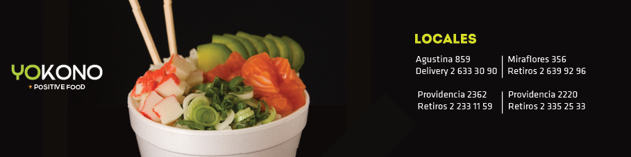

POSITIVE FOODComida saludable
Yokono es el primer restaurante de comida rápida Japonesa, que propone una nueva forma de comer sushi: saludable, rápida, muy rica, de gran calidad y a un precio accesible.
CALIDAD CERTIFICADAAlimentos seguros
Contamos con la certificación GMP (Good Manufacturing Practice), emitida por la empresa Control Sigma, que respalda nuestros correctos procedimientos de producción e higiene.
REPARTO A DOMICILIOEn Santiago Centro
Revisa el área y los horarios de reparto para Santiago Centro (Locales de Miraflores y Agustinas). Así podrás disfrutar de nuestra comida con toda comodidad y ahorrando tiempo.
SIGUENOS EN FACEBOOK
Puedes estar informado respecto a las últimas novedades y además tener acceso a promociones de último minuto.
TU OPINION NOS INTERESA
Con tus aportes podemos ir mejorando constantemente para llegar a ser tu restaurant favorito.
TRABAJA CON NOSOTROS
Estamos constantemente buscando nuevos integrantes para nuestro equipo. ¡Mándanos un mail con tus datos!
website by TCIT - © 2013 YOKONO